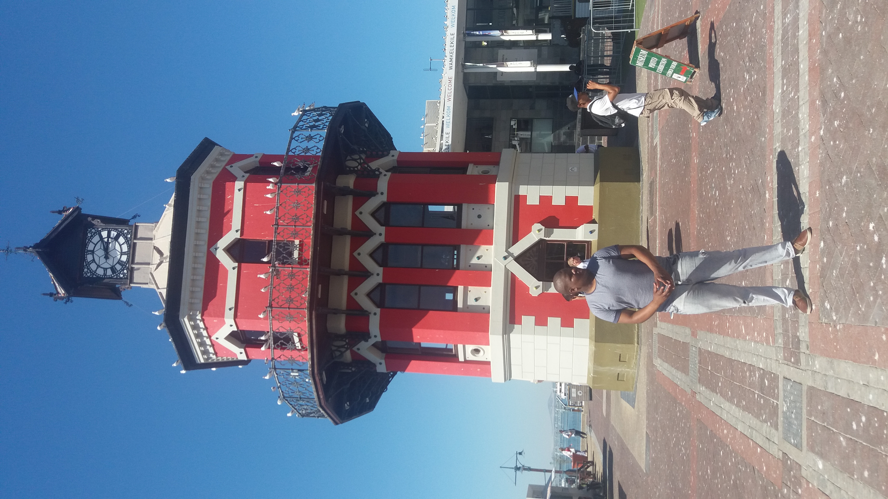

My favorite city

Paris
I would love to visit Paris (also know as the city of lights) because Paris is one of the most beautiful
(if not the most) city is the world. Paris have grow from being a small village to be the metropolis
that it
is today. Paris one of the wealthiest region in Europe and contributes around about 30% to France’s
gross domestic product (GDP). Paris is the center of science, art, fashion and commerce.
I would love to take a close up look at the Eiffel Tower.
A foreign language
| English Phrase | Swahili Language |
|---|---|
| My name is Sinethemba Dlova. | Jina langu ni Sinethemba Dlova. |
| I had an awesome week last week. | Mimi nilikuwa wiki kutisha wiki iliyopita. |
| What are we having for super today? | Je, ni sisi kuwa na kwa super leo? |
| I would really love to go to Paris. | Kwa kweli napenda upendo kwenda Paris. |
| Programming is such a useful skill to own. | Programming ni kama ujuzi muhimu kwa wenyewe. |
Historic places in V&A Waterfront
Portsword Tunnel
Portswood Tunnel is a historic tunnel that the old builders of 1860 used. The old builders
of 1860 of the waterfront had a great problem. They had to quary sttones from the Waterfront to the other side of Portswood Ridge to build the breakwater. So they simply dug out a long cutting, through which gang of sweating convicts pushed cocopans full of stone to whe Query5, past where Ferrymans, Mitchell's brewery and the Amphitheatre are today. Much later the cutting was roofed over and build on, and during the World War II was actually converted - fortunately without ever being needed - for use as an air-raid shelter.
African Trading Port
At African Trading Port (ATP) we have attempted to bring Africa under one roof. Artwork from practically each African country and culture is available. ATP’s roots started with the establishment of an art workshop in Zimbabwe in 1978. We have been housed in our current location; the Old Port Captain’s Building at Cape Town’s Waterfront since 2001. ATP employs 60 permanent staff and 500 “art-scouts” who travel specific regions of Africa, going deep into the rural areas and working directly with local communities to collect available artworks.
Clock Tower
The Victorian Gothic-style Clock Tower is an icon of the old Cape Town harbour. It was the original Port Captain's Office built in 1882. The pointed Gothic windows surrounds the structure with a clock, imported from Edinburgh, as a main feature. The red walls are the same colour as they were in the 1800's, having been carefully matched to scrapings of the original paint.